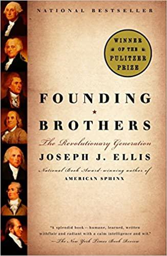

Writing about sortition, equality and merit, I spent a good part of today reading the last chapter of a book I read a decade or so ago on the relationship John Adams and Thomas Jefferson had in their dotage – including jumping in and out of references and checking up for instance on the origin of the word 'ideology'. (It was a French coinage! Why am I not surprised?). Early friends and colleagues, if one is to judge from the chapter, they fell out over Jefferson's partisanship and duplicity and Adams' intemperance, to use an old fashioned word.Anyway, I reproduce it for your enjoyment, enlightenment and edification. It touches on some deep themes. Like liberalism and conservatism, ideal and reality, honesty and duplicity, including, of course, what I call 'self-transparency'. Sympathy and antipathy and how understanding seems to require the former, but can also benefit from the focus given by the latter.
And silence. What is not spoken is often more important than what is spoken – in this case, slavery. It put me in mind of the silences in the area I think about – policy. If one wants to force a bit of self-transparency as I tried to do here, you're trying to rescue things from the silences. This piece – which argues that government bureaucracies are pyramids of lies – puts it more starkly. In each case, raising this in a meeting with government officials is like breaking the forth wall in a play. Not done. And in many senses that's true also in academia which hasn't interested itself in the most salient thing about government bureaucracies – the obstacles they erect against self-transparency – and so to genuine learning through accountability. But that's another story. I hope you enjoy the essay. I did.
Oh – and, as you'll notice there are 'footnotes to nowhere' in the text. That's a good reason for you to go out and buy the book :)
The Friendship
ADAMS CORRECTLY regarded the five-hundred-mile trek back to Quincy as his final exit from the public stage. Upon arriving home he noted that his barnyard was full of seaweed, which then prompted a characteristically indiscreet observation: He had made “a good exchange … honors and virtues for manure.” When a violent storm struck on the day of his return, he took it as a providential sign that trouble was following him into retirement, as he put it, “substituting fermentations in the elements for revolutions in the moral, intellectual and political world.” As one who had helped to make those political revolutions happen, he claimed to be completely comfortable in stormy weather. But now, at the advanced age of sixty-six, was it not natural to expect some semblance of serenity? “Far removed from all the intrigues, and now out of reach of all the great and little passions that agitate the world,” he explained, “I hope to enjoy more tranquillity than has ever before been my lot.”1
The trouble with Adams was not that storms seemed to follow him, but rather that he carried them inside his soul wherever he went. Abigail spied him in the field that July of 1801, working alongside the hired hands, swinging his sickle and murmuring obscenities at his political opponents. From his letters we know that Hamilton topped his enemies list; he called him that “bastard brat of a Scotch pedlar,” who was “as ambitious as Bonaparte, though less courageous, and, save for me, would have involved us in a foreign war with France & a Civil war with ourselves.”2
Not far behind Hamilton came his former friend and successor to the presidency. Though the hate for Jefferson was far less, the hurt was more. They had done so much together, struggled together against the odds in 1776, represented America in Europe during the 1780s, risen above their political differences during Washington’s administration. But during his own presidency Adams believed that Jefferson had betrayed him and their friendship. And it was all done so indirectly, so craftily, like a burglar who left no fingerprints. Jefferson was “a shadow man,” Adams now believed, a man whose character was “like the great rivers, whose bottoms we cannot see and make no noise.” When commenting on his other enemies, Adams displayed considerable flair. Tom Paine, for example, came off as “the Satyr of the Age … a mongrel between Pig and Puppy, begotten by a wild Boar on a Butch Wolf.” With Jefferson, however, the colorful epithets and irreverent images did not come so easily. It was difficult to be specific when the core of a man’s character was elusiveness.3
The character of Adams’s own complicated feelings toward Jefferson eventually revealed itself through Abigail. The occasion was poignant. In 1804 Jefferson’s younger daughter, Maria Jefferson Eppes, died from complications during childbirth. Abigail decided to write a letter of consolation, explaining that “reasons of various kinds witheld my pen, until the powerful feelings of my heart, have burst through the restraint.” She recalled caring for Maria as a nine-year-old girl just arrived in London. “It has been some time that I conceived of any event in this Life, which would call forth, feelings of mutual sympathy,” Abigail confided to Jefferson, but the loss of a child overcame all her rational reservations. She wanted Jefferson to know that her heart was with him.4
Jefferson normally had perfect pitch when interpreting the tone of a letter, but in this instance, he missed Abigail’s clear warning signals and read her words as an invitation to resume the friendship with the Adams family. He seized the opportunity to review the long political partnership he had enjoyed with her husband. Their mutual affection “accompanied us thro’ long and important scenes,” he wrote, and “the different conclusions we had drawn from our political reading and reflections were not permitted to lessen mutual esteem.” Though they had twice run against each other for the presidency, he insisted that “we never stood in one another’s way.” The political rivalry had never eroded the personal respect between them.
There was only one occasion, Jefferson confided, when a decision by Adams struck him as “personally unkind.” That was his appointment of Federalists to several vacant judgeships during his last weeks as president. These appointments, somewhat misleadingly described as “the midnight judges,” had occurred after the presidential election, and therefore denied Jefferson the right to choose his own men. (The major offense was the appointment of John Marshall as chief justice of the Supreme Court, arguably Adams’s most enduring anti-Jeffersonian legacy, in part because of Marshall’s magisterial career on the bench and in part because Jefferson and Marshall utterly despised each other.) But this one offense, as Jefferson put it, “left something for friendship to forgive,” so that “after brooding it over for some little time … I forgave it cordially, and returned to the same state of esteem and respect for him [Adams] which had so long subsisted.”5
Jefferson’s letter sent Abigail into a controlled rage. “You have been pleased to enter upon some subjects which call for a reply,” she began ominously. The very notion that Jefferson should feel himself the injured party with the moral leverage to forgive her husband was a preposterous presumption. Now that Jefferson had raised the issue of political betrayal, he would have to “excuse the freedom of this discussion … which has taken off the Shackles I should otherwise found myself embarrassed with.” The pent-up anger poured out: “And now Sir, I freely disclose to you what has severed the bonds of former Friendship, and placed you in a light very different from what I had once viewed you in.”
After delivering a spirited defense of her husband’s right to make judicial appointments before he left office, Abigail launched a frontal attack on Jefferson’s character. Throughout Adams’s presidency, she claimed, Jefferson had used his position as vice president to undermine the policies of the very man he had been elected to support. This was bad enough. But the worst offenses occurred during the election of 1800. Jefferson was guilty of “the blackest calumny and foulest falsehoods” during that bitter campaign. While affecting disinterest and detachment, he was secretly hiring scandalmongers like James Callender to libel Adams with outrageous charges: Adams was mentally deranged; Adams intended to have himself crowned as an American monarch; Adams planned to appoint John Quincy his successor to the presidency. “This, Sir, I considered as a personal injury,” Abigail observed, “the Sword that cut the Gordion knot.” It was richly ironic and wholly deserving that the infamous Callender had then turned on Jefferson and accused him of a sexual liaison with Sally Hemings, his household slave. “The serpent you cherished and warmed,” she noted with satisfaction, “bit the hand that nourished him.” And so, if there was any forgiving to be done, it would all happen on the Adams side. In the meantime, Jefferson was the one who needed to do some soul searching. She concluded with one last verbal slap: “Faithful are the wounds of a Friend.”6
Throughout his extraordinarily vast correspondence, Jefferson never received another letter like this one. He had his detractors, to be sure, but Federalist critics tended to attack him in the public press, which he could and did dismiss as partisan propaganda. Abigail’s accusations, on the other hand, were private and personal, came from someone whom he respected as an intimate friend, and went beyond mere matters of political partisanship to questions of honor and trust. His first instinct was to claim that both sides, Republicans and Federalists alike, had engaged in lies and distortions during the election of 1800, and that he had suffered equivalent “calumnies and falsehoods” along with Adams. (This was completely true.) He then went on to disclaim that “any person who knew either of us could possibly believe that either meddled in that dirty work.” In effect, he had no role whatsoever in promoting Callender’s libels against Adams. (This was a lie.) “What those who wish to think amiss of me,” Jefferson pleaded, “I have learnt to be perfectly indifferent.” But with those like Abigail, “where I know a mind to be ingenious, and need only truth to set it to rights, I cannot be as passive.”7
Abigail was having none of it. As she saw it, Jefferson’s denials only offered further evidence of his duplicity. His complicity in behind-the-scenes political plotting was common knowledge. Abigail had initially resisted the obvious because, as she put it, “the Heart is long, very long in receiving the convictions that is forced upon it by reason.” Even now, she acknowledged, “affection still lingers in the Bosom, even after esteem has taken its flight.” But there was no denying that Jefferson had mortgaged his honor to win an election. His Federalist critics had always accused him of being a man of party rather than principle. “Pardon me, Sir, if I say,” Abigail concluded, “that I fear you are.”8
We can be reasonably sure that Abigail was speaking for her husband as well as herself in this brief volley of letters. The Adams team, then, was charging Jefferson with two serious offenses against the unwritten code of political honor purportedly binding on the leadership class of the revolutionary generation. The first offense, which has a quaint and wholly anachronistic sound to our modern ears, was that Jefferson was personally involved in his own campaign for the presidency and that he conducted that campaign with only one goal in mind—namely, winning the election. This was the essence of the charge that he was a “party man.” Such behavior became an accepted, even expected, feature of the political landscape during the middle third of the nineteenth century and has remained so ever since. Within the context of the revolutionary generation, however, giving one’s allegiance to a political party remained illegitimate. It violated the core of virtue and disinterestedness presumed essential for anyone properly equipped to oversee public affairs. Neither Washington nor Adams had ever played a direct role in their own campaigns for office. And even Jefferson, who was the first president to break with that tradition, felt obliged to do so surreptitiously, then issue blanket denials when confronted by Abigail. Jefferson, in fact, was on record as making one of the strongest statements of the era against the influence of political parties. He described party allegiance as “the last degradation of a free and moral agent” and claimed that “if I could not go to heaven but with a party, I would not go there at all.”9
Jefferson’s position on political parties, like his stance on slavery, seemed to straddle a rather massive contradiction. In both instances his posture of public probity—slavery should be ended and political parties were evil agents that corrupted republican values—was at odds with his personal behavior and political interest. And in both instances, Jefferson managed to convince himself that these apparent contradictions were, well, merely apparent. In the case of his active role behind the scenes during the presidential campaign of 1800, Jefferson sincerely believed that a Federalist victory meant the demise of the spirit of ’76. Anything that avoided that horrible outcome ought to be justifiable. He then issued so many denials of his direct involvement in the campaign that he probably came to believe his own lies. That is why Abigail’s relentless refusal to accept his personal testimonials on this score struck a nerve. He was not accustomed to having his word questioned and his excuses exposed, not even by himself.
His second offense was more personal. Namely, he had vilified a man whom he claimed was a long-standing friend. He had sponsored Callender’s polemics against the Adams administration even though he knew them to be gross misrepresentations. Adams had no monarchical ambitions, though he did believe in a strong executive. He did not want war with France, though he did think that American neutrality should take precedence over the Franco-American alliance. Both positions were in accord with Washington’s preferred policy. Unlike Washington, however, Adams had political vulnerabilities, which Jefferson exploited for his own political advantage. If the gross distortions had been orchestrated by Madison or any number of lesser political operatives, it would have been bad enough. But for Jefferson himself to have sanctioned the defamation was the essence of betrayal. It was akin to Hamilton’s behind-the-scenes slandering of Burr, except in the case of Adams, the slander was more contemptible because essentially untrue. If Adams had been a believer in the code duello, which he was not (nor, for that matter, was Jefferson), this defamation of the Adams character would have presented a prime opportunity for a resolution with pistols on the field of honor. For at the highest level of political life in the early republic, relationships remained resolutely personal, dependent on mutual trust, and therefore vulnerable to betrayals whenever the public and private overlapped.
Although Jefferson probably presumed that Abigail was sharing their correspondence with her husband, Adams himself never saw the letters until several months later. After reading over the exchange, he made this written comment for the record: “The whole of this correspondence was begun and conducted without my Knowledge or Suspicion, and this morning at the desire of Mrs. Adams I read the whole. I have no remarks to make upon it at this time and in this place.” A steely silence thereupon settled over the dialogue between Quincy and Monticello for the following eight years.10
DURING THAT time Jefferson was too busy to indulge in retrospective fretting over the loss of a friend. His first term as president would go down as one of the most brilliantly successful in American history, capped off by the Louisiana Purchase (1803), which effectively doubled the size of the national domain. His second term, on the other hand, proved to be a series of domestic tribulations and foreign policy failures, capped off by the infamous Embargo Act (1807), which devastated the economy while failing to avert the looming war with England. Adams’s assessment of Jefferson’s presidency mixed fair-minded criticism of his policies with prejudicial comments on his character:
Mr. Jefferson has reason to reflect upon himself. How he will get rid of his remorse in retirement, I know not. He must know that he leaves the government infinitely worse than he found it, and that from his own error or ignorance. I wish his telescopes and mathematical instruments, however, may secure his felicity. But if I have not mismeasured his ambition … the sword will cut away the scabbard.… I have no resentment against him, although he has honored and salaried almost every villain he could find who had been an enemy to me.11
Despite his brave posturings of nonchalance and indifference, Adams was, in fact, obsessed with Jefferson’s growing reputation as one of the major figures of the age. As Adams remembered it, Jefferson had played a decidedly minor role in the Continental Congress. While he, John Adams, was delivering the fiery speeches that eventually moved their reluctant colleagues to make the decisive break with England, Jefferson lingered in the background like a shy schoolboy, so subdued that “during the whole Time I sat with him in Congress, I never heard him utter three sentences together.” Now, however, because of the annual celebrations on July 4, the symbolic significance of the Declaration of Independence was looming larger in the public memory, blotting out the messier but more historically correct version of the story, transforming Jefferson from a secondary character to a star player in the drama. “Was there ever a Coup de Theatre,” Adams complained, “that had so great an effect as Jefferson’s Penmanship of the Declaration of Independence.” Jefferson was an elegant stylist, to be sure, which was one of the main reasons that he, John Adams, had selected him to draft the famous document in the first place. But he was not a mover-and-shaker, only a draftsman; the words he wrote were merely the lyrical expression of ideas that had been bandied about in the Congress and the various colonial legislatures for years. Adams had actually led the debate in the Congress that produced its passage, as Jefferson sat silently and sullenly while the delegates revised his language. What was really just “a theatrical side show” was now being enshrined in memory as the defining moment in the revolutionary drama. “Jefferson ran away with the stage effect,” Adams lamented, “and all the glory of it.”12
Adams was not the kind of man to suffer in silence. His jealousy of Jefferson was palpable, and his throbbing vanity became patently obvious as he relived the contested moments from the past in the privacy of his own memory, then reported on his admittedly self-serving findings to trusted confidants like Benjamin Rush. For the simple truth was that the aging Sage of Quincy had nothing else to do. Jefferson had the all-consuming duties of the presidency, then two major retirement projects—the completion of his architectural renovations of Monticello and the creation of the University of Virginia. But the sole project for Adams lay within himself. His focus, indeed his obsession, was the interior architecture of his own remembrances, the construction of an Adams version of American history, a spacious room of his own within the American pantheon.
He was doing what we would now call therapy: thrashing about inside himself in endless debate with his internal demons while seated by the fireside in what he self-mockingly called “my throne”; twitching in and out of control as he attempted to compose his autobiography, which turned into a series of salvos at his political enemies (Hamilton, no surprise, was the chief target) and ended, literally in midsentence, when he realized that it was all catharsis and no coherence; outraging his old friend Mercy Otis Warren with embarrassing tantrums because her three-volume History of the American Revolution (1805) failed to make him the major player in the story. Warren responded in kind: “I am so much at a loss for the meaning of your paragraphs, and the rambling manner in which your angry and undigested letters are written,” she explained, “that I scarcely know where to begin my remarks.” Warren concluded with a scathing diagnosis of the Adams correspondence with her as a scattered series of verbal impulses and “the most captious, malignant, irrelevant compositions that have ever been seen.”
Undeterred, he launched another round of his memoirs in the Boston Patriot, designed to “set the record straight,” an act that quickly gave rise to another cascade of emotional eruptions. “Let the jackasses bray or laugh at this,” he declared defiantly: “I am in a fair way to give my criticks and enemies food enough to glut their appetites.… I take no notice of their billingsgate.” While drafting the nearly interminable essays for the Patriot, he compared himself to a wild animal who had “grabbed the end of a cord with his teeth, and was drawn slowly up by pulleys, through a storm of squills, crackers, and rockets, flashing and blazing around him every moment,” and although the “scorching flames made him groan, and mourn, and roar, he would not let go.” He was, to put it bluntly, driving himself half-crazy in frantic but futile attempts at self-vindication. Every effort to redeem his reputation only confirmed what Hamilton had claimed in his infamous pamphlet during the presidential campaign of 1800—namely, that Adams was an inherently erratic character who often lacked control over his own emotional impulses.13
In 1805 Adams resumed a correspondence with Benjamin Rush, in which he actually seemed to embrace that very conclusion: “There have been many times in my life when I have been so agitated in my own mind,” Adams confessed, “as to have no consideration at all of the light in which my words, actions, and even writings would be considered by others.… The few traces that remain of me must, I believe, go down to posterity in much confusion and distraction, as my life has been passed.” The correspondence with Rush, which lasted for eight years, permitted Adams to confront his personal demons and exorcise them in a series of remarkable exchanges that, taken together, are the most colorful, playful, and revealing letters he ever wrote. Rush set the terms for what became a high-stakes game of honesty by proposing that they dispense with the usual topics and report to each other on their respective dreams.14
Adams leapt at the suggestion and declared himself prepared to match his old friend “dream for dream.” Rush began with “a singular dream” set in 1790 and focusing on a crazed derelict who was promising a crowd that he could “produce rain and sunshine and cause the wind to blow from any quarter he pleased.” Rush interpreted this eloquent lunatic as a symbolic figure representing all those political leaders in the infant nation who claimed they could shape public opinion. Adams subsequently countered: “I dreamed that I was mounted on a lofty scaffold in the center of a great plain in Versailles, surrounded by an innumerable congregation of five and twenty millions.” But the crowd was not comprised of people. Instead, they were all “inhabitants of the royal menagerie,” including lions, elephants, wildcats, rats, squirrels, whales, sharks—the litany went on for several paragraphs—who then proceeded to tear one another to pieces as he tried to lecture them on the advantages of “the unadulterated principles of liberty, equality and fraternity among all living creatures.” At the end of the dream, he was forced to flee the scene with “my clothes torn from my back and my skin lacerated from head to foot.”15
As befits a dialogue framed around reports from the subconscious regions, the Adams-Rush correspondence tended to emphasize the power of the irrational. Adams recalled a French barber in Boston who used the phrase “a little crack,” meaning slightly crazy: “I have long thought the philosophers of the eighteenth century and almost all the men of science and letters ‘crack’ … and that the sun, moon, and stars send all their lunatics here for confinement.” Then, ever playful with Rush, Adams signed off with the following self-deprecating joke: “I must tell you that my wife, who took a fancy to read this letter upon my table, bids me tell you that she ‘thinks my head, too, a little crack,’ and I am half of that mind myself.”16
Adams had a lifelong tendency to view the world “out there” as a projection of the emotions he felt swirling inside himself. The overriding honesty and intimacy of the correspondence with Rush permitted this projection to express itself without restraint. The question he had posed to others, simultaneously poignant and pathetic, had the authentic ring of a cri de coeur: “How is it that I, poor ignorant I, must stand before Posterity as differing from all the other great Men of the Age?” In his monthly exchanges with Rush, Adams worked out his answer to that question. There is a Mad Hatter character to the Adams-Rush correspondence, as both men swapped stories and shared anecdotes in a kind of “Adams and Rush in Wonderland” mode. But there was a deadly serious insight buried within the comedy.17
The insight was precocious, anticipating as it did the distinction between history as experienced and history as remembered, most famously depicted in Leo Tolstoy’s War and Peace. (The core insight—that all seamless historical narratives are latter-day constructions—lies at the center of all postmodern critiques of traditional historical explanations.) Under Rush’s prodding influence and in response to his dreamy inspirations, Adams realized that the act of transforming the American Revolution into history placed a premium on selecting events and heroes that fit neatly into a dramatic formula, thereby distorting the more tangled and incoherent experience that participants actually making the history felt at the time. Jefferson’s drafting of the Declaration of Independence was a perfect example of such dramatic distortions. The Revolution in this romantic rendering became one magical moment of inspiration, leading inexorably to the foregone conclusion of American independence.
As Adams remembered it, on the other hand, “all the great critical questions about men and measures from 1774 to 1778” were desperately contested and highly problematic occasions, usually “decided by the vote of a single state, and that vote was often decided by a single individual.” Nothing was clear, inevitable, or even comprehensible to the soldiers in the field at Saratoga or the statesmen in the corridors at Philadelphia: “It was patched and piebald policy then, as it is now, ever was, and ever will be, world without end.” The real drama of the American Revolution, which was perfectly in accord with Adams’s memory as well as with the turbulent conditions of his own soul, was its inherent messiness. This meant recovering the exciting but terrifying sense that all the major players had at the time—namely, that they were making it up as they went along, improvising on the edge of catastrophe.18
Adams derived his authority for a deconstructed version of the American Revolution from his incontestable claim to have been “present at the creation.” He had been a participant during most, if not all, of the crucial moments from the Stamp Act crisis in 1765 to his own retirement from the presidency in 1801. And he knew all the major players personally. This conferred instant credibility upon his preferred role as designated truth teller, poised to expose the chaotic reality beneath all uplifting accounts of the Revolution. Support for American independence, for example, was always fragile and shifted with each victory or defeat in the field, which was often a matter of pure luck. Or the decision to locate the national capital on the Potomac was a back-room deal involving so many secret bargains and bribes that no one would ever unravel the full story.19
In the same vein, all the heroic portraits of the great men were romanticized distortions. Franklin, for example, was a superb scientist and masterful prose stylist, to be sure, but also a vacuous political thinker and diplomatic fraud, who spent the bulk of his time in Paris flirting with younger women of the salon set. Washington was an indisputable American patriarch, but more an actor than a leader, brilliant at striking poses “in a strain of Shakespearean … excellence at dramatic exhibitions.” He was also poorly read, seldom wrote his own speeches, and, according to one member of his cabinet, “could not write a sentence without misspelling some word.” In general, the Virginians were the chief beneficiaries of all the highly stylized histories, though, as Adams observed, “not a lad upon the Highlands is more clannish than every Virginian I have ever known.” Virginians were also the most adept at employing what Adams called “puffers,” what we would call “spinners” or public-relations experts. “These puffers, Rush, are the only killers of scandal,” Adams noted. “You and I have never employed them, and therefore scandal has prevailed against us.” When Rush somewhat mischievously suggested that Adams himself enjoyed the support of Federalist “puffers,” specifically mentioning William Cobbett, Adams pleaded total ignorance: “Now I assure you upon my honor and the faith of the friendship between us that I never saw the face of Cobbett; and that I should not know him if I met him in my porridge dish.”20
This last remark, while vintage Adams-Rush banter, also exposed the painfully egotistical motives lurking beneath the entire Adams campaign for a more realistic, nonmythologized version of the American Revolution. While his insistence on a deconstructed history was certainly a precocious intellectual insight, there is also no question that the Adams urge to discredit the dramatic renderings of the revolutionary era was driven by his own wounded vanity. To put it squarely, such versions of the story failed to provide him with a starring role in the drama. At its nub, his critique of the historical fictions circulating as seductive truths was much like a campaign to smash all the statues, because the sculptor had failed to render a satisfactory likeness of yours truly.
On the other hand, Adams possessed a congenital affinity for deconstructed interpretations of history, of his own life, indeed of practically everything. It was the way he saw the world. By temperament, he was inherently impulsive, highly combustible, instinctively irreverent. All his major published works on political philosophy, including his Defence of the Constitution of the United States of America and Discourses on Davila, along with his unpublished autobiography, lacked coherent form. They were less books than notebooks, filled with rambling transcriptions of his own internal conversations that ricocheted off one another at unpredictable angles. While his most devoted enemies, chiefly Franklin and Hamilton, claimed that his erratic habits of mind were symptomatic of mental illness, some recent scholarship has suggested the problem was physical, that he might well have been afflicted with hyperthyroidism, or Graves’ disease. For our purposes, however, the ultimate cause of the condition is less important than its systemic manifestation, which was a congenital inability to separate his thoughts from his feelings about them. This caused him to mistrust all purely rational descriptions of human behavior as incompatible with the more passionate stirrings he felt within his own personality. As he told Rush, “Deceive not thyself. There is not an old friar in France, not in Europe, who looks on a blooming young virgin with sang-froid.” These same internal stirrings also predisposed him to regard all perfectly symmetrical narratives or stories preaching an obvious moral message and populated by larger-than-life heroes as utter fabrications. Like straight lines in nature, such things did not exist for him.21
They did, however, for his former friend at Monticello, who had spent the bulk of his adult life keeping his head and his heart in separate chambers of his personality. Starting in 1807, Jefferson’s name began to come up sporadically in Adams’s letters to Rush. Prior to that time, Jefferson had remained a forbidden subject. When asked to comment on his renowned partnership with Jefferson during the early days of the American Revolution, Adams developed a standard statement of denial: “You are much mistaken when you say that no man living have so much knowledge of Mr. Jefferson’s transactions as myself,” Adams insisted. “I know but little concerning him.” With Rush, however, Adams began to slip Jefferson into their conversation as an example of the kind of enigmatic temperament destined to flourish in the history books.22
He recalled Jefferson’s retirement from the Washington administration in 1793, quite obviously a shrewd tactical retreat designed to position Jefferson for his ascent “toward the summit of the pyramid”—that is, the presidency—but which was described by the Republican press “as unambitious, unavaricious, and perfectly disinterested.” Somehow, Jefferson was even able to persuade himself that he was beyond temptation and happily ensconced on his mountaintop for the duration. “When a man has one of the two greatest parties in a nation interested in representing him to be disinterested,” Adams observed with amazement, “even those who believe it to be a lie will repeat it so often to one another that at last they will seem to believe it to be true.”23
The same pattern materialized later in the 1790s, when Jefferson embraced two misguided propositions about European affairs. The first was that England was “tottering to her fall,” that her economy was collapsing and “she must soon be a bankrupt and unable to maintain her naval superiority.” The second misguided opinion, “still more erroneous and still more fatal,” was that France was the wave of the future, that she “would establish a free republican government and even a leveling democracy, and that monarchy and nobility would forever be abolished in France,” all of which would occur peacefully and bloodlessly. In both instances, events proved Jefferson wrong. In both instances Adams had disagreed with Jefferson and been proven right. But despite his underestimation of England and his overestimation of France, Jefferson’s reputation and popularity soared. “I have reason to remember it,” Adams recalled, “because my opinion of the French Revolution produced a coldness towards me in all my Revolutionary friends, and an inclination towards Mr. Jefferson, which broke out in violent invectives and false imputations upon me and in flattering panegyrics upon Mr. Jefferson.”
Once again, Jefferson seemed uniquely equipped to become the chief beneficiary of romanticized versions of history, in part because his own capacity for self-deception permitted him to deny, and with utter sincerity, the vanities and ambitions lurking in his own soul, and in part because the moralistic categories that shaped all his political thinking fit perfectly the romantic formula that history writing seemed to require. The fact that these categories were blatant illusions (for example, the French Revolution was not a European version of the American Revolution) seemed to matter less than the fact that they confirmed a potent and seductive mythology that was more appealing than the messier reality. Through some complex combination of duplicity and disposition, Jefferson had come to embody the will to believe. He was not so much living a lie as living a fiction that he had come to believe himself.24
Adams had come to see himself as the mirror image of Jefferson: “Mausoleums, statues monuments will never be erected to me,” he wrote with resignation to Rush. “Panegyrical romances will never be written, nor flattering orations spoken, to transmit me to posterity in brilliant colors. No, nor in true colors. All but the last I loathe.” Facing that unattractive truth took time, a full decade of shouting and pouting, relieved by converting his despair into comedy with Rush, but it also came naturally to Adams, whose entire career had been spent preaching the unattractive truths to everybody else. If Jefferson seemed predestined to tell people what they wanted to hear, Adams now acknowledged that his own destiny was just the opposite: to tell them what they needed to know.25
This was Adams’s resigned but bittersweet mood in 1809, when Rush reported his most amazing dream yet. He dreamed that Adams had written a short letter to Jefferson, congratulating him on his recent retirement from public life. Jefferson had then responded to this magnanimous gesture with equivalent graciousness. The two great patriarchs had then engaged in a correspondence over several years in which they candidly acknowledged their mutual mistakes, shared their profound reflections on the meaning of American independence, and recovered their famous friendship. Then the two philosopher-kings “sunk into the grave nearly at the same time, full of years and rich in the gratitude and praises of their country … and to their numerous merits and honors posterity has added that they were rival friends.”26
Adams responded immediately: “A DREAM AGAIN! I have no other objection to your dream but that it is not history. It may be prophecy.” Then he offered a satirical account of his relationship with Jefferson, claiming that “there has never been the smallest interruption of the personal friendship between Mr. Jefferson that I know of.” This convenient lie was then followed by a humorous piece of bravado: “You should remember that Jefferson was but a boy to me. I was at least ten years older than him in age and more than twenty years older in politics. I am bold to say I was his preceptor in politics and taught him everything that was good and solid in his whole political conduct.” How could one hold a grudge against a disciple? On the other hand, given Jefferson’s junior status, was it not more appropriate for him to initiate the reconciliation? “If I should receive a letter from him,” Adams concluded tartly, “I should not fail to acknowledge and answer it.” Jefferson, in short, would have to extend the hand first.27
That was not going to happen. Rush was simultaneously writing Jefferson, somewhat misleadingly suggesting that Adams had indicated he was now eager for a reconciliation and virtually on his deathbed: “I am sure an advance on your side will be a cordial to the heart of Mr. Adams,” Rush explained. “Tottering over the grave, he now leans wholly upon the shoulders of his old Revolutionary friends.” But Jefferson would not rise to the bait, convinced as he was after his earlier exchange with Abigail that he had already made a heroic effort that had been summarily rejected. It was now Adams’s turn to attempt a bridging of the gap. That was how it stood for more than two ensuing years: the two sages circling each other, marking off their territory like old dogs, sniffing around the edges of a possible reconciliation, reluctant to close the distance.28
The distance was reduced in 1811 when Edward Coles, a Jefferson protégé who was attempting, in vain it turned out, to persuade his mentor to assume a more forthright position opposing slavery, visited Adams in Quincy. Adams let it be known that his political disagreements with Jefferson had never killed his affection for the man. “I always loved Jefferson,” he told Coles, “and still love him.” When word of this exchange reached Jefferson, as Adams knew it would, Jefferson declared his conversion. “This is enough for me,” he wrote Rush, adding that he knew Adams to be “always an honest man, often a great one, but sometimes incorrect and precipitate in his judgments.” This latter caveat rewidened the gap that the earlier statement had seemed to close. The gap became a chasm when Jefferson went on to explain that he had always valued Adams’s judgment, “with the single exception as to his political opinions,” a statement roughly equivalent to claiming that the Pope was otherwise infallible, except when he declared himself on matters of faith and morals.29
On Christmas Day of 1811, Adams apprised Rush that he was fully aware of the benevolent duplicities Rush was performing as intermediary: “I perceive plainly, Rush, that you have been teasing Jefferson to write me, as you did me to write him.” Adams also knew full well that Rush was sending edited versions of his letters to Jefferson, removing the potentially offensive passages. In the Christmas letter Adams reviewed the full range of political disagreements with Jefferson, mixing together serious controversies (for example, the Alien and Sedition Acts, the French Revolution, the American navy) with a lighthearted list of personal differences (for example, Adams held levees once a week as president, while Jefferson’s entire presidency was a levee; Jefferson thought liberty favored straight hair, while Adams thought curled hair “just as republican as straight”). That was the tone Adams wanted to convey to Jefferson: still feisty and critical of Jefferson’s principles and policies, but fully capable of controlling the dialogue with humor and diplomatic nonchalance; the fires still burned, but the great volcano of the revolutionary generation was at last in remission.30
In the end, it was Adams who made the decisive move. On January 1, 1812, a short but cordial note went out from Quincy to Monticello, relaying family news and referring to “two pieces of Homespun” coming along by separate packet. Rush was ecstatic, as well as fully convinced that he had orchestrated a reconciliation: “I rejoice in the correspondence which has taken place between you and your old friend Mr. Jefferson,” he declared triumphantly to Adams. “I consider you and him as the North and South Poles of the American Revolution. Some talked, some wrote, and some fought to promote and establish it but you and Mr. Jefferson thought for us all.” Adams went along with the celebratory mood, hiding his pride behind a mask of jokes and the rather fraudulent pretense that his famous friendship with Jefferson had never really been interrupted: “Your dream is out … your prophecy fulfilled! You have worked wonders! You have made peace between powers that were never at Enmity.… In short, the mighty defunct Potentates of Mount Wollaston and Monticello by your sorceries … are again in being.” In the same self-consciously jocular style he soon began to refer to his Quincy estate as “Montezillo,” which he claimed meant “very little mountain,” in deference to Jefferson’s Monticello, which meant “little mountain.” He insisted that Rush was making more of the reunion with Jefferson than it deserved. Nothing momentous or historic was at stake. “It was only as if one sailor had met a brother sailor, after twenty-five years’ absence,” Adams joked, “and had accosted him, how fare you, Jack?”31
Nothing could have been further from the truth. Adams’s ever-vibrating vanities were now, true enough, under some measure of control. But his dismissive posture toward the rupture in the friendship—what breech and what betrayal?—was obviously only a bravado pose. Even the start of the correspondence exposed the awkward tensions just below the surface. Jefferson presumed, quite plausibly, that the “two pieces of Homespun” Adams was sending along referred to domestically produced clothing, a nice symbol of the American economic response to the embargo and a fitting reminder of the good old days when Adams and Jefferson had first joined the movement for American independence. And so Jefferson responded with a lengthy treatise on the merits of domestic manufacturing and grand memories of the nonimportation movement in the 1760s, only to discover that Adams had intended the homespun reference as a metaphor. His gift turned out to be a copy of John Quincy’s recent two-volume work, Lectures on Rhetoric and Oratory.
Why, then, did Adams take the fateful step, which led to a fourteen-year exchange of 158 letters, a correspondence that is generally regarded as the intellectual capstone to the achievements of the revolutionary generation and the most impressive correspondence between prominent statesmen in all of American history? The friendship and the mutual trust on which it rested had, in fact, not been recovered by 1812. It took the correspondence to recover the friendship, not the other way around. What, then, motivated Adams to extend his hand across the gap that existed between Quincy and Monticello, then write more than two letters for every one of Jefferson’s?
Two overlapping but competing answers come to mind. First, there was a good deal of unfinished business between the two men, a clear recognition on both sides that they had come to fundamentally different conclusions about what the American Revolution meant. Adams believed that Jefferson’s version of the story, while misguided, was destined to dominate the history books. The resumption of his correspondence with Jefferson afforded Adams the opportunity to challenge the Jeffersonian version and to do so in the form of a written record virtually certain to become a major historical document of its own. “You and I ought not to die,” Adams rather poignantly put it in an early letter, “before We have explained ourselves to each other.” But both men knew they were sending their letters to posterity as much as to each other.32
Second, the reconciliation and ensuing correspondence permitted Adams to join Jefferson as the costar of an artfully arranged final act in the revolutionary drama. Adams had spent most of his retirement years denouncing such contrivances as gross distortions of history. But he had also spent those same years marveling at the benefits that accrued to anyone willing to pose for posterity in the mythical mode. If he could only control himself, if he could speak the lines that history wanted to hear, if he could fit himself into the heroic mold like a kind of living statue, he might yet win his ticket to immortality.
BOTH ADAMS and Jefferson knew their roles by heart, especially in its Ciceronian version as a pair of retired patriarchs now beyond ambition and above controversy. The dialogue they sustained from 1812 to 1826 can be read at several levels, but the chief source of its modern appeal derives from its elegiac tone: the image of two American icons, looking back with seasoned serenity at the Revolution they have wrought, delivering eloquent soliloquies on all the timeless topics, speaking across their political differences to each other and across the ages to us. If we wished to conjure up a mental picture of this rendition of the dialogue, it would feature Jefferson standing tall and straight in his familiar statuesque posture, his arms folded across his chest, as was his custom, while the much shorter Adams paced back and forth around him, jabbing at the air in his nervous and animated style, periodically stopping to grab Jefferson by the lapels to make an irreverent point.
This, of course, is the constructed or posed version that ought to provoke our immediate skepticism. (In Adams’s terms, this is not history, but romance.) For several reasons, however, this beguiling depiction cannot be summarily dismissed. First of all, the friendship was, in fact, recovered and the reconciliation realized during the course of the correspondence. The clinching evidence comes late, in 1823, when Jefferson responded to a series of letters that appeared in the newspapers. Adams had written them much earlier and had described Jefferson as a duplicitous political partisan. “Be assured, my dear Sir,” Jefferson wrote Adams, “that I am incapable of receiving the slightest impression from the effort now made to plant thorns on the pillow of age, worth, and wisdom, and to sow tares between friends who have been such for nearly half a century. Beseeching you then not to suffer your mind to be disquieted by this wicked attempt to poison its peace, and praying you to throw it by.” Adams was overjoyed. He insisted that Jefferson’s letter be read aloud to his entire extended family at the breakfast table, calling it “the best letter that ever was written … just such a letter as I expected, only it was infinitely better expressed.” He concluded with an Adams salvo against “the peevish and fretful effusions of politicians,” then signed off as “J.A. In the 89 year of his age still too fat to last much longer.” Clearly, this was no dramatic contrivance. The old trust had been fully recovered.33
Second, the improbably symmetrical ending to the dialogue casts an irresistibly dramatic spell over the entire story and the way to tell it. Rush had predicted that the two patriarchs would reconcile, then go to their graves “at nearly the same time.” But their mutual exit was even more exquisitely timed than Rush had dreamed. (No serious novelist would ever dare to make this up.) They died within five hours of each other, on the fiftieth anniversary to the day and almost to the hour of the official announcement of American independence to the world in 1776. Call it a miracle, an accident, or a case of two powerful personalities willing themselves to expire on schedule and according to script. But it happened.
Third, the correspondence can be read as an extended conversation between two gods on Mount Olympus because both men were determined to project that impression: “But wither is senile garrulity leading me?” Jefferson asked rhetorically. “Into politics, of which I have taken final leave.… I have given up newspapers in exchange for Tacitus and Thucydides, for Newton and Euclid; and I find myself much happier.” Adams then responded with his own display of classical learning and literary flair: “I have read Thucydides and Tacitus so often, and at such distant periods of my Life, that elegant, profound and enchanting is their Style, I am weary of them,” then joked that “My Senectutal Loquacity has more than retaliated your ‘Senile Garrulity.’ ”34
Many of the most memorable exchanges required no staging or self-conscious posing whatsoever, since there was a host of safe subjects the two sages could engage without risking conflict and that afforded occasions for conspicuous displays of their verbal prowess. They were, after all, two of the most accomplished letter writers of the era, men who had fashioned over long careers at the writing desk distinctive prose styles that expressed their different personalities perfectly. Thus, Jefferson waxed eloquent on the aging process and their mutual intimations of mortality: “But our machines have now been running for 70 or 80 years,” he observed stoically, “and we must expect that, worn as they are, here a pivot, there a wheel, now a pinion, next a spring, will be giving way, and however we may tinker with them for awhile, all will at length surcease motion.” Adams responded in kind but with a caveat: “I am sometimes afraid that my ‘Machine’ will not ‘surcease motion’ soon enough; for I dread nothing so much as ‘dying at the top,’ ” meaning becoming senile and a burden to his family. He then went on to chide Jefferson for talking like an old man. Of all the original signers of the Declaration of Independence, “You are the youngest and the most energetic in mind and body,” and therefore most likely to be the final survivor. Like the last person in the household to retire for the night, it would be Jefferson’s responsibility to close up the fireplace and “rake the ashes over the coals.”35
Most modern readers come to the correspondence fully aware of Jefferson’s proficiency with a pen, and are therefore somewhat surprised to discover that Adams could more than hold his own in the verbal dueling, indeed delivered the most quotable lines. For example, after Jefferson produced a lengthy exegesis on the origins of the Native American population of North America, Adams dismissed all the current theories about the original occupants of the continent: “I should as soon suppose that the Prodigal Son, in a frolic with one of his Girls, made a trip to America in one of Mother Carey’s Eggsels, and left the fruits of their amours here.” Or when Jefferson embraced the development of an indigenous American language, arguing that everyday usage “is the workshop in which new ones [words] are elaborated,” rather than the English dictionaries compiled by the likes of Samuel Johnson, Adams went into a colorful tirade. All English dictionaries, he declared, were vestiges of the same British tyranny that the American Revolution destroyed forever. “We are no more bound by Johnson’s Dictionary,” he pronounced, “than by the Cannon [sic] Law of England.” By what right did Samuel Johnson deny him, John Adams, the freedom to fashion his own vocabulary? “I have as good a right to make a Word,” he insisted, “as that Pedant Bigot Cynic and Monk.”36
Speaking of words, the pungency of the Adams prose comes through so impressively in the correspondence in part because Adams invested himself in the exchange more than Jefferson. He composed more memorable passages because he wrote many more words. When the torrent from Quincy threatened to flood Monticello, he apologized for getting so far out ahead. Jefferson then apologized in return, claiming that he received over twelve hundred letters a year, all of which required responses, so it was difficult for him to match the Adams pace. Adams replied that he received only a fraction of that number but chose not to answer most of them, which allowed him to focus all his allegedly waning energies on Jefferson.
Beyond sheer verbal volume, the punch so evident in the Adams prose reflected his more aggressive and confrontational temperament. The Jefferson style was fluid, lyrical, cadenced, and melodious. Words for him were like calming breezes that floated across the pages. The Adams style was excited, jumpy, exclamatory, naughty. Words for him were like weapons designed to pierce the pages or explode above them in illuminating airbursts. While the Adams style generated a host of memorable epigrammatic flashes, it was the worst-possible vehicle for sustaining the diplomatic niceties. Jefferson was perfectly capable of remaining on script and in role as philosopher-king to the end. If it had been up to him, the demigod version of the Adams-Jefferson dialogue would have captured its essence and ultimate meaning as a staged performance for posterity. Adams, however, despite all his vows of Ciceronian serenity, was congenitally incapable of staying in character. For him, the only meaningful kind of conversation was an argument. And that, in the end, is what the dialogue with Jefferson became, and the best way to understand its historical significance.
ADAMS REMAINED on his best behavior for over a year. There were a few brief flurries, chiefly jabs at Jefferson’s failure to prepare the nation for the War of 1812, especially his negligence in building up the American navy, which had always been an Adams hobbyhorse. Ever diplomatic, Jefferson never quite conceded that Adams had been right about a larger navy, but when the American fleet won some early battles in the war, Jefferson graciously noted that “the success of our little navy … must be more gratifying to you than to most men, as having been the early and constant advocate of wooden walls.” The potentially explosive issues lay buried further back in the past. Both men recognized that touching them placed the newly established reconciliation at risk.37
The first Adams eruption occurred in June of 1813, followed immediately by a chain reaction of explosions over the ensuing six months. (Adams wrote thirty letters, Jefferson five.) The detonating device was publication of a letter Jefferson had written in 1801 to Joseph Priestley, the English scientist and renowned critic of Christianity. In that letter Jefferson had mentioned Adams in passing as a retrograde thinker opposed to all forms of progress, one of the “ancients” rather than “moderns.” “The sentiment that you have attributed to me in your letter to Dr. Priestley I totally disclaim,” Adams protested, “and I demand in the French sense of the word demand of you the proof.” Sensing that Adams was in mid-explosion, Jefferson responded at length. The Priestley letter was “a confidential communication” that was “never meant to trouble the public mind.” He then went on to remind Adams that the party wars were still raging back then, that both sides had been guilty of some rather extreme denunciations of the others, and that his real target had been the Federalists, who had defamed his own notions of government as dangerous innovations.38
Then came the crucial acknowledgment and quasi-apology. Adams had been targeted for criticism because he was the standard-bearer for the Federalist party. But Jefferson had always realized that Adams did not fit into the party grooves: “I happened to cite it from you, [though] the whole letter shows I had them only in view,” Jefferson explained. “In truth, my dear Sir, we were far from considering you as the author of all the measures we blamed. They were placed under the protection of your name, but we were satisfied they wanted much of your approbation.” (Notice the collective “we,” an inadvertent acknowledgment of the coordinated campaign of the Republican party.) Adams, in effect, happened to be in the line of fire, which was really directed at the Hamiltonian wing of the Federalist party: “You would do me great injustice therefore,” Jefferson concluded, “by taking to yourself what was intended for men who were your secret, as they are now your open enemies.”39
Jefferson’s explanation was ingenious. It shifted the blame for the rupture of the friendship onto the Hamiltonians, whom he knew Adams utterly despised, then invited Adams to align himself, at least retrospectively, with the Republican side of the debate. The trouble with Adams, of course, was that he was unwilling to align himself with any political party; indeed, his trademark had always been to embody the virtuous ideal, the Washington quasi-monarchical model of executive leadership, and stand above party. The clear, if unspoken, message of Jefferson’s letter was that this admirable posture was no longer possible in American politics. Adams had gotten himself caught in the cross fire created by the new conditions and the partisan imperatives they generated. Most important, from the point of view of the friendship, Jefferson admitted that his behind-the-scenes criticism of Adams had been a willful misrepresentation. While not really an apology—indeed, forces beyond his control had dictated his actions—this was at least a major concession.
Adams’s immediate impulse was to fire off several illumination rounds designed to expose the inaccuracies in Jefferson’s account of the Adams presidency, inaccuracies that Jefferson had already acknowledged: “I have no thought, in this correspondence, but to satisfy you and myself,” Adams observed, adding, “My Reputation has been so much the Sport of the public for fifty years and will be with Posterity, that I hoped it a bubble a Gossameur, that idles in the wanton Summer Air.” Jefferson had mentioned the Alien and Sedition Acts as a major source of partisan hatred. “As your name is subscribed to that law, as Vice President,” Adams declared, “and mine as President, I know not why you are not as responsible for it as I am.” Jefferson had used the phrase “the Terrorism of the day” to describe the supercharged atmosphere of the late 1790s. Adams launched into a frenzied recollection of the mobs gathered around his house, protesting his decision to send a peace delegation to France: “I have no doubt you was fast asleep in philosophical Tranquillity,” Adams noted caustically, “when ten thousand People, and perhaps many more, were parading the Streets of Philadelphia.… What think you of Terrorism, Mr. Jefferson?” Jefferson had blamed the Federalists for the lion’s share of the party mischief. Adams thought the blame was equally shared: “Both parties have excited artificial Terrors,” he concluded, “and if I were summoned as a Witness to say upon Oath … I could not give a more sincere Answer, than in the vulgar Style. ‘Put them in a bagg and shake them, and then see which comes out first.’ ” However anachronistic it might seem to Jefferson, he, John Adams, would go to his grave defying party politics.40
This was the defining moment in the correspondence. In the summer of 1813 the dialogue ceased being a still-life picture of posed patriarchs and became an argument between competing versions of the revolutionary legacy. All the unmentionable subjects were now on the table because a measure of mutual trust had been recovered. The best bellwether of the Adams psyche was always Abigail, and on July 15, 1813, she appended a note to her husband’s letter, her first communication with Jefferson since the lacerating letters she had written him nine years earlier. “I have been looking for some time for a space in my good Husbands Letters to add the regards of an old Friend,” she now wrote, “which are still cherished and preserved through all the changes and v[ic]issitudes which have taken place since we first became acquainted, and will I trust remain as long as, A Adams.” Abigail’s voice, as always, was the surest sign. Jefferson had been forgiven. The friendship, so long in storage, had never completely died. The recovered sense of common affection and trust now made it possible to act on Adams’s classic pronouncement, that they ought not die before they had explained themselves to each other.41
Although Adams tended to set the intellectual agenda in the dialogue that ensued, Jefferson inadvertently provided the larger framework within which the debate played out. He was actually trying to make amends for his unfair characterization of Adams in the Priestley letter as one of the “ancients.” He now wanted to go on record as agreeing with Adams that, while the progress of science was indisputable, certain political principles were eternal verities that the ancients understood as well as the moderns: “The same political parties which now agitate the U.S. have existed thro’ all time,” he observed. “And in fact the terms of whig and tory belong to natural as well as to civil history. They denote the temper and constitution and mind of different individuals.” Was this Jefferson’s roundabout way of suggesting that he and Adams had in effect been acting out a timeless political argument? As the lengthy letter proceeded, it became clear that Jefferson was, in fact, attempting to place his friendship and eventual rivalry with Adams within a broader context, to see it through the more detached lens of history.42
In the Jeffersonian version of the story, Adams and Jefferson fought shoulder-to-shoulder against the Tories, served together in Europe as a dynamic team, then returned to serve again in the new national government. And then the classic distinction appeared again:
the line of division was again drawn, we broke into two parties, each wishing to give a different direction to the government; the one to strengthen the most popular branch, the other the more permanent branches, and to extend their performance. Here you and I separated for the first time: and as we had been longer than most in the public theatre, and our names were more familiar to our countrymen, the party which considered you as thinking with them placed your name at the head: the other for the same reason selected mine.… We suffered ourselves, as you so well expressed it, to be the passive subjects of public discussion. And these discussions, whether relating to men, measures, or opinions, were conducted by the parties with an animosity, a bitterness, and an indecency, which had never been exceeded.… To me then it appears that there have been differences of opinion, and party differences, from the first establishment of governments, to the present day; and on the same question which now divides our own country: that these will continue thro’ all future time: that every one takes his side in favor of the many, or the few, according to his constitution, and the circumstances in which he is placed.43
Here was the classic Jeffersonian vision, and the beautiful simplicity of its narrative structure makes it even more clear why Adams was absolutely right to admire Jefferson’s knack for fitting himself into a story line with immense appeal to future historians. Jefferson’s mind consistently saw the world in terms of clashing dichotomies: Whigs versus Tories; moderns versus ancients; America versus Europe; rural conditions versus urban; whites versus blacks. The list could go on, but it always came down to the forces of light against the forces of darkness, with no room for anything in between. What Adams called a romance was actually a melodrama. And the specific version Jefferson was now offering Adams cast the Federalists in the role of latter-day Tories who had betrayed the expansive legacy of the American Revolution, the corrupt guardians of the privileged “few” aligned defiantly against the Jeffersonian “many.”
But how could this be? Even Jefferson seemed to acknowledge that Adams did not quite fit into this rigid formula. “If your objects and opinions have been misunderstood,” Jefferson noted, “if the measures and principles of others have been wrongly imputed to you, as I believe they have been, that you should leave an explanation of them, would be an act of justice to yourself.” In effect, if Adams had a different story to tell, if he saw a different pattern in the historical swirl they had both lived through, he should write out his account and let posterity judge.44
Adams, of course, had been trying to do just that for over a decade. And, as we have seen, the result had been a bewildering jumble of tortured protestations, endless harangues, and futile displays of wounded pride, all leading to the rather disquieting conclusion that there was no pattern to be discovered, only one invented by fiction writers masquerading as historians. Glimmers of an un-Jeffersonian outline peeked through the cloud of words Adams had spewed out. The neat divisions between Whigs and Tories did not accord with the Adams sense of the political landscape during the 1770s. Between a third and a half of the American people, he guessed, had been indifferent and floated with the prevailing tide of the moment. The divisions of the 1790s did not match up with Jefferson’s categories, either, since those supporting and those opposing a more powerful national government had all been good Whigs. Certainly neither he nor Washington had viewed themselves as traitors to the revolutionary cause. They had regarded their Federalist programs as a fulfillment, rather than a betrayal, of American independence. Nor did Jefferson’s distinction between the “few” and the “many” work very well south of the Potomac, except in the ironic sense that only a few Virginians were willing to address the forbidden subject that shaped their lives, their fortunes, and that cast a long shadow over their sacred honor.
But glimmerings do not a story make. Jefferson had a story. In the absence of a coherent alternative with equivalently compelling appeal, his story was destined to dominate the history books. Adams sensed that it was not the true story, even doubted whether such a thing as a true story existed. But once Jefferson laid it out before him so elegantly in the summer of 1813, Adams at last possessed a target on which to focus his considerable firepower. He was utterly hopeless as a grand designer of narratives, and he knew it. The artifice required to shape a major work of history or philosophy was not in him. But he was a natural contrarian, a born critic, whose fullest energies manifested themselves in the act of doing intellectual isometric exercises against the fixed objects presented by someone else’s ideas. Jefferson now became the fixed object against which he strained.
The conversational format of the correspondence with Jefferson also suited his temperament perfectly, since it permitted topics to pop up, recede, then appear again episodically, without any pretense of some overall design, the give-and-take rhythms of the dialogue matching nicely the episodic surgings of his own mind. As a result, no neatly arranged rendering of the running argument Adams had with Jefferson after 1813 can do justice to its dynamic character. All one can do is to identify the major points of contention, then impose a thematic order that draws out the deeper implications of the argument, all the while knowing that the coherence that results is itself a construction.
THE MAJOR argument running through the letters throughout 1813–1814 concerned their different definitions of social equality and the role of elites in leading and governing the American republic. Without ever saying so directly, they were talking about themselves and the other prominent members of the revolutionary generation. The argument was prompted by Jefferson’s long letter on the “few” and the “many” and his accompanying assertion that the eternal political question had always been “Whether the power of the people, or that of the aristoi should prevail.” Even the ever-combative Adams realized that this was heavily mined ground, so he began on an agreeable note. “Precisely,” he told Jefferson, the distinction between “the few and the many … was as old as Aristotle,” and the timeless clash between them was the major reason he believed that the ancients had much to teach the moderns about politics. Having established some common ground, Adams then veered off in a direction that had always gotten him into political trouble—namely, the inevitable role that elites play in making history happen. He recalled that it was Jefferson himself who had first encouraged him “to write something upon Aristocracy” when they were together in London thirty years earlier. “I soon began, and have been writing Upon that Subject ever since. I have been so unfortunate as never to make myself understood.”45
“Your aristoi,” he lectured to Jefferson, “are the most difficult Animals to manage, of anything in the Whole Theory and practice of Government.” In his Defence, Adams had written three volumes of relentless and seemingly endless prose to show that political power invariably rested in the hands of a few prominent individuals and families. Whether it was the feudal barons of medieval France, the landed gentry of Elizabethan England, the merchant class of colonial New England, or the great planter families of the Chesapeake, history showed that the many always deferred to the few. Why? “I say it is the Ordonance of God Almighty, in the Constitution of human nature, and wrought into the Fabric of the Universe,” Adams answered. “Philosophers and Politicians may nibble and quibble, but they will never get rid of it. Their only resource is to controul it.” In the Adams formulation, aristocracies were to society as the passions were to the individual personality, permanent fixtures susceptible to disciplined containment and artful channeling, but never altogether removable. “You may think you can eliminate it,” Adams warned, but “Aristocracy like Waterfowl dives for Ages and rises again with brighter Plumage.” All the Jeffersonian chants about human equality were delusions that pandered to mankind’s urge to believe an impossible dream. “Inequalities of Mind and Body are so established by God Almighty in the Constitution of Human Nature,” Adams declared, “that no Art or policy can ever plain them down to a level.”46
Jefferson’s response took the form of two distinctions that together pointed in decidedly more optimistic directions. First, he agreed that there was “a natural aristocracy among men” based on “virtue and talents.” Then there was an artificial or “pseudo-aristocracy founded on wealth and birth, without either virtue or talents.” Was not the whole point of the republican experiment they had helped to launch in America to provide for the selection of the natural aristocrats and block the ascendance of the artificial pretenders, thereby separating “the wheat from the chaff”? And had that, in fact, not occurred during and after the American Revolution, with the “band of brothers” he and Adams had come to symbolize being the obvious beneficiaries of the republican selection process?47
Second, Jefferson suggested that Adams’s description of aristocratic power was appropriate for Europe, where feudal privileges, family titles, and more limited economic opportunities created conditions that sustained class distinctions. In America, on the other hand, there were no feudal barons or family coats of arms, and “everyone may have land to labor for himself as he causes,” so the endurance of artificial elites was impossible. Jefferson noted, somewhat gratuitously, that perhaps in New England vestiges of feudalism remained and thereby misled Adams. In Massachusetts and Connecticut there still lingered “a traditional reverence for certain families, which has rendered the offices of government nearly hereditary in those families.” In Virginia, however, laws abolishing primogeniture and entail had been passed during the Revolution. “These laws, drawn by myself, laid the axe to the root of the Pseudo-aristocracy,” Jefferson claimed, thereby clearing the ground for the growth of political institutions based on merit and an admittedly imperfect form of equality of opportunity. Jefferson concluded on a gracious note. “I have thus stated my opinion on a point on which we differ,” he observed, “not with a view to controversy, for we are too old to change opinions which are the result of a long life in inquiry and reflection; but on the suggestion of a former letter of yours, that we ought not to die before we have explained ourselves to each other.”48
Adams contested both of Jefferson’s distinctions. Europe was, to be sure, burdened with aristocratic legacies and gross disparities in wealth that were not present to the same degree in America. But unless one believed that human nature underwent some magical metamorphosis in migrating from Europe to America, or unless one believed that the American Revolution had produced a fundamental transformation in the human personality, the competition for wealth and power would also yield unequal results in America: “After all,” Adams observed, “as long as Property exists, it will accumulate in Individuals and Families.… I repeat it, so long as the Idea and Existence of PROPERTY is admitted and established in Society, Accumulations of it will be made, the SNOW ball will grow as it rolls.” Jefferson’s version of a classless American society was therefore a pipe dream, because the source of the problem was not European feudalism but human nature itself. As far as Jefferson’s description of Virginia’s allegedly egalitarian conditions were concerned, “No Romance would be more amusing.” Here Adams confined himself to the still-dominant role played by the planter class in the Chesapeake region, not even mentioning the fact that 40 percent of the population was enslaved, a feudal remnant of awesome and ominous proportions.49
Finally, Adams apprised Jefferson: “Your distinction between natural and artificial Aristocracy does not appear to me well founded.” One might be able to separate wealth from talent in theory, but in practice, and in all societies, they were inextricably connected: “The five Pillars of Aristocracy,” he argued, “are Beauty, Wealth, Birth, Genius and Virtues. Any one of the three first, can at any time, over bear any one or both of the two last.” But it would never come to that anyway, because the qualities Jefferson regarded as artificial and those he regarded as natural were all mixed together inside human nature, then mixed together again within society, in blended patterns that defied Jefferson’s neat dissections.50
In a separate correspondence about the same time with John Taylor, another prominent Virginia planter and political thinker who had also questioned Adams’s views on aristocracy, Adams called attention to the irony of the situation. The son of a New England farmer and shoemaker was being accused of aristocratic allegiances by an owner of slaves with vast estates, much of both inherited from his wife’s side of the family. “If you complain that this is personal,” Adams explained to Taylor, “I confess it, and intend it should be personal, that it might be more striking to you.” Though precisely the same situation obtained for Jefferson, as well—he owned about two hundred slaves and ten thousand acres, a goodly portion inherited from his father-in-law—Adams never confronted him so directly. (The closest he came was his running joke about the difference between Monticello and Montezillo.) Adams was fully prepared to include Jefferson as a charter member of the natural aristocracy that made and then secured the American Revolution. Along with most of the Virginia dynasty, however, his ascent into the revolutionary elite was not the exclusive function of talent and virtue.51
What Adams could never quite fathom, and Jefferson understood intuitively, was that the very word “aristocracy” had become an epithet in the political culture of postrevolutionary America. Even though Adams was surely correct about the disproportionate power exercised by elites throughout history, and even though the revolutionary generation had succeeded in establishing a republican government in large part because a small group of talented statesmen had managed the enterprise throughout its earliest and most vulnerable phrases, a “republican aristocracy” seemed the same contradiction in terms as a “republican king.” It violated the central premise of the revolutionary legacy—namely, that the people at large were the sovereign source of all political authority. Therefore, the only kind of political elite permissible was one that repudiated its elite status and claimed to speak for “the many” rather than “the few.” The Republicans had been the first to grasp this elemental fact of American political culture in the 1790s. The Federalists, who were no more a social or economic elite than the Republicans, had come to ruin because they never grasped it. Adams could argue till doomsday that the American experiment in republicanism had succeeded because it had managed to harness the energies and talents of its best and brightest citizens, the very “band of brothers” he and Jefferson supposedly symbolized, but as long as he referred to them as an “aristocracy,” whether natural or artificial, he seemed to be defying the republican legacy itself.
Another argumentative thread, which began in 1815 and then ran throughout the remainder of the correspondence, concerned the French Revolution. Adams loved to bring the subject up in his correspondence with others, especially Benjamin Rush, because events had tended to vindicate his early apprehensions, which had produced the first fissures in his relationship with Jefferson in the early 1790s and then became central ingredients in the Republican polemic against Adams in the presidential campaign of 1800. But it was Jefferson who first broached the subject in the correspondence, and he did so in a wholly conciliatory way: “Your prophecies … proved truer than mine; and yet fell short of the fact, for instead of a million, the destruction of 8 or 10 millions of human beings has probably been the effect of these convulsions. I did not, in 89, believe they would have lasted so long, nor have cost so much blood.” Jefferson went on to acknowledge that Adams’s critical perspective on the French Revolution had been a major source of his unpopularity. Now that Napoleon was finally defeated—word of Waterloo had just reached America—and the outcome was perfectly clear, Jefferson graciously observed that Adams was due an apology for “the breach of confidence of which you so justly complain, and of which no one has more frequent occasion of fellow-feeling than myself.”52
Only someone thoroughly familiar with the political history of the 1790s could recognize what a major concession and personal confession of regret Jefferson was making. Adams caught the message immediately. “I know not what to say of your Letter,” he wrote, “but that it is one of the most consolatory I have ever received.” For Jefferson was not only admitting that his optimistic assessment of events in revolutionary France had been misguided; he was also conceding that the Republican party, to include himself, had played politics with the French Revolution in order to undermine the Adams presidency. Jefferson was making amends for what the Adams family had understandably regarded as “the singular act” of betrayal. He was saying, at last, that he was sorry.53
Adams suggested that Jefferson had misread the meaning of the French Revolution—sincerely misread it and not just manipulated it for political purposes—because of a faulty way of thinking conveniently conveyed by the new French word, “ideology.” Napoleon had popularized the word, which had first been used by the French philosophe Destutt de Tracy, whom Jefferson had read and admired enormously. Adams claimed to be fascinated by the new word “upon the Common Principle of delight in every Thing We cannot understand.” What was an “ideology”? he asked playfully: “Does it mean Idiotism? The Science of Non Compos Menticism. The Science of Lunacy? The Theory of Delerium?” As Adams explained it, the French philosophes had invented the word, which became a central part of their utopian style of thinking and a major tenet in their “school of folly.” It referred to a set of ideals and hopes, like human perfection or social equality, that philosophers mistakenly believed could be implemented in the world because it existed in their heads. Jefferson himself thought in this French fashion, Adams claimed, confusing the seductive prospects envisioned in his imagination with the more limited possibilities history permitted. Critics of Jefferson’s visionary projections, like Adams, were then accused of rejecting the ideals themselves, when in fact they were merely exposing their illusory character.54
“Ideology,” then, had provided Jefferson with a politically attractive pro-French platform, which had turned out to have enormous rhetorical advantages no matter how wrong it proved in reality. Jefferson had thought that France was the wave of the future and England was a relic of the past. “I am charmed by the fluency and rapidity of your Reasoning,” Adams observed, “but I doubt your Conclusion.” England, not France, was destined to become the dominant European power of the nineteenth century, Adams correctly predicted, though he, like Jefferson, retained a deep suspicion of English designs on America, a permanent legacy of their mutual experience as American revolutionaries. “They have been taught from their Cradles to despise, scorn, insult and abuse Us,” Adams wrote of the English, adding in his most relentlessly realistic mode that “Britain will never be our Friend, till we are her Master.” Both Adams and Jefferson, it turned out, were too deeply shaped by the desperate struggle against England to foresee the Anglo-American alliance that flourished throughout the Victorian era and beyond.55
They both did anticipate, albeit from decidedly different perspectives, the looming sectional crisis between North and South that their own partnership stretched across. “I fear there will be greater difficulties to preserve our Union,” Adams warned, “than You and I, our Fathers Brothers Disciples and Sons have had to form it.” Jefferson concurred, though the subject touched the most explosive issue of all—namely, the unmentionable fact of slavery. Even the ever-candid Adams recognized that this was the forbidden topic, the one piece of ground declared off-limits by mutual consent. With one notable exception, the dialogue between Adams and Jefferson, so revealing in its engagement of the conflicting ideas and impulses that shaped the American Revolution, also symbolized the unofficial policy of silence within the revolutionary generation on the most glaring disagreement of all.56
The exception occurred in 1819, prompted by the debate then raging over passage of the Missouri Compromise. Prior to that time, Adams and Jefferson had not only avoided the subject in their correspondence; they had also independently declared the matter intractable: “More than fifty years has it attracted my thoughts and given me much anxiety,” Adams confessed in 1817. “A Folio Volume would not contain my Lucubrations on this Subject. And at the End of it, I should leave my reader and myself at a loss, what to do with it, as at the beginning.” For his part, Jefferson kept repeating the avoidance argument he had fashioned in 1805. “I have most carefully avoided every public act or manifestation on that subject,” he announced, explaining that the abolition of slavery was a task for the next generation, “who can follow it up, and bear it through to its consummation.”57
Even though the congressional debate over the Missouri question was essentially an argument about the extension of slavery into the territories, the code of silence governed the lengthy exchanges in the House of Representatives, which focused exclusively on the constitutional question of federal versus state jurisdiction rather than on the problem of slavery itself. Jefferson, for his part, was outraged that the issue was being discussed at all: “But the Missouri question is a breaker on which we lose the Missouri country by revolt, and what more God only knows,” he complained to Adams. “From the battle of Bunker’s hill to the treaty of Paris we never had so ominous a question.” Jefferson understood full well that the constitutional argument over federal jurisdiction merely masked the deeper issue at stake, and he said so to Adams:
The real question, as seen in the states afflicted with this unfortunate population, is Are our slaves to be presented with freedom and a dagger? For if Congress has a power to regulate the conditions of the inhabitants of states, within the states, it will be but another exercise of that power to declare that all shall be free. Are we then to … wage another Peloponessian War to settle the ascendancy between them. That question remains to be seen: but not I hope by you or me. Surely they will parlay awhile, and give us time to get out of the way.58
Adams, usually the more apocalyptic member of the team, in this instance adopted the more sanguine Jeffersonian posture. “I hope some good natured way or other will be found out to untie this very intricate knot,” he counseled. With his other correspondents, though not with Jefferson, he was much more forthright. “Negro Slavery is an evil of Colossal magnitude,” he wrote to William Tudor, “and I am utterly averse to the admission of Slavery into the Missouri Territory.” What’s more, he welcomed the very debate that Jefferson abhorred. “We must settle the question of slavery’s extension now,” he told his daughter-in-law, “otherwise it will stamp our National Character and lay a Foundation for calamities, if not disunion.” As for the constitutional question, he regarded federal jurisdiction over the western territories as a clear precedent that had been established, irony of ironies, by Jefferson’s executive action in the Louisiana Purchase.59
Over the course of the next four decades, the national debate over slavery and its expansion into the West was often framed as an argument over the intent of the founders. Here were two of the unequivocally original patriarchs, declaring that their respective understandings of the Revolution’s legacy concerning slavery were fundamentally different. Jefferson’s version led directly to the doctrine of “popular sovereignty” embraced by Stephen Douglas, to the states’ rights position of John C. Calhoun and then the Confederacy. Adams’s version led directly to the “house divided” position of Abraham Lincoln, the conviction that abolishing slavery was a moral imperative bequeathed by the revolutionary generation to their successors, and the doctrine of federal sovereignty established by the victory of the Union in the Civil War. When it came to slavery, it would seem, there was no singular vision, only contradictory original intentions.
The dominant legacy, of course, was avoidance and silence. Jefferson objected so strenuously to the debate over the Missouri question because it violated that legacy. “In the gloomiest moments of the Revolutionary War,” he wrote in 1820, “I never had any apprehensions equal to what I feel from this source.” In their last exchange on the topic, Adams suggested that he, too, would observe the unwritten code and carry his concerns to the grave: “Slavery in this Country I have seen hanging over it like a black cloud for half a Century.… I might probably say I had seen Armies of Negroes marching and counter-marching in the air, shining in Armour. I have been so terrified with this Phenomenon that I constantly said in former times to the Southern Gentlemen, I cannot comprehend this object; I must leave it to you. I will vote for forcing no measure against your judgments.” Neither the Revolution nor the infant republic could have succeeded without the support of the southern states, so Adams had deferred to the Virginians to assume leadership of the antislavery movement. By 1820 it was abundantly clear that they had failed in this mission, with Jefferson himself the most visible symbol of the failure. But Adams chose to keep his vow of silence, at least with Jefferson, thereby honoring the etiquette of the friendship above his moral reservations, and simultaneously making the dialogue between Quincy and Monticello a final testament to the most problematic legacy of the revolutionary generation.60
THE CORRESPONDENCE lost its argumentative edge and shifted back to an elegiac, still-life pattern after 1820. One final flurry occurred in 1819, when a document appeared in the newspapers purportedly drafted by a group of citizens in Mecklenburg County, North Carolina, in May of 1775, and containing language eerily similar to Jefferson’s later draft of the Declaration of Independence. Adams called Jefferson’s attention to the discovery, noting that he wished he had known about it back then: “I would have made the Hall of Congress Echo and re-echo, with it fifteen Months before your Declaration of Independence.” Nothing could have been better calculated to activate all of Jefferson’s interior antennae, since his primacy as the author of the Declaration was his major claim to everlasting fame. He responded promptly, insisting that “this paper is a fabrication,” urging Adams to remain skeptical “until positive and solemn proof of its authenticity shall be provided.” Adams quickly reassured Jefferson that he now believed “that the Mecklenburg Resolutions are a fiction.” Meanwhile, however, he was telling other correspondents quite the opposite. “I could as soon believe that the dozen flowers of the Hydrangia now before my Eyes were the work of chance,” he joked, “as that the Mecklenburg Resolutions and Mr. Jefferson’s declaration were not derived one from the other.”61
Adams himself derived great satisfaction from the Mecklenburg incident, not so much because he believed Jefferson was a plagiarist, but because he thought the whole emphasis on one man, one moment, and one document distorted the true story of the American Revolution. Even though the Mecklenburg Declaration was subsequently exposed as a forgery, it accurately reflected the Adams sense that there were multiple venues or theaters where the drama of the movement for independence was playing out and multiple culminating moments besides July 4, 1776. In his own memoirs he had selected May 15, 1776, as the most decisive moment, because that was the day the Continental Congress passed a resolution calling for new constitutions in each of the states. (Not so coincidentally, Adams had drafted and moved the resolution.) In the Adams version, this decision was truly decisive because it created separate and independent American governments. It also meant that the Revolution was a responsible and positive commitment to new forms of political discipline rooted in the experience of the old colonial governments, not just a negative assertion of separation from England and a complete break with the past, as Jefferson’s Declaration seemed to suggest. According to Adams, the Revolution succeeded because of its ties to the past, which meant that, in the Jeffersonian sense, it was not really a revolution at all.62
Though the brief exchange over the Mecklenburg Declaration touched on these significant differences of opinion, the diplomatic imperatives of the dialogue ruled out full disclosure. By 1820 even Adams had stopped firing off his illumination rounds and had adopted the Jeffersonian posture of benign duplicity, preferring to risk hypocrisy rather than the friendship. Though his prose remained pungent, the more dangerous bursts of candor had subsided, especially after Abigail passed away in October of 1818. (As she lay in bed dying, Adams remained composed but told the gathered relatives, “I wish I could lay down beside her and die too.”) Jefferson had always claimed that each generation should not linger beyond its allotted time, that one had almost a moral obligation to clear the ground for the next generation by placing oneself beneath it. Now both patriarchs seemed to sense that they had outlived their time. Looking back on life, wrote Jefferson, was “like looking over a field of battle. All, all dead: and ourselves left alone amidst a new generation whom we know not, and who know not us.”63
The vicissitudes of aging began to crowd out the more controversial topics. “Crippled wrists and fingers make writing slow and laborious,” Jefferson complained. “But while writing to you, I lose the sense of these things, in the recollection of ancient times, when youth and health made happiness out of every thing. I forget for awhile the hoary winter of age when we can think of nothing but how to keep ourselves warm, and how to get rid of our heavy hours until the friendly hand of death shall rid us of all at once.” Adams agreed that memories of the past were all that was left, and he too preferred to remember only the good ones: “I look back with rapture to those golden days when Virginia and Massachusetts lived and acted together like a band of brothers,” he recalled, and though the end was near, “While I breath I shall be your friend.”64
They referred to life in the hereafter, not as a chance to see God so much as an opportunity to converse with each other and the other “band of brothers.” As Jefferson put it, “May we meet there again … with our antient Colleagues, and receive with them the seal of approbation.” Adams concurred that the reunion in heaven would permit them to laugh at their human follies and foibles, though he would talk with Franklin only after the great man did proper penance for his sins. Neither man was completely convinced that heaven was anything more than a metaphor. Adams was on record as thinking that the belief in life everlasting was more important than the thing itself. “If it would be revealed or demonstrated that there is no future state,” he apprised one friend, “my advice to every man, woman, and child would be, as our existence would be in our own power, to take opium.” Or as he put it to Jefferson, “if we are disappointed, we shall never know it.” Each man was hedging his bets on the hereafter by preparing his private papers for posterity, the one place where they knew their prospects of immortality were assured. And both men regarded the letters they were writing to each other as the capstone to that final project.65
There is no question that the emotional bond between the two patriarchs was restored and the friendship recovered toward the end. They no longer had to pose as partners; or what amounts to the same thing, the posing reflected a deeply felt sense of affinity. In part, the bonding occurred because the correspondence of their twilight years permitted both sages to confront and argue out their different notions of the history they had lived and made together. Jefferson had made his amends and some crucial concessions. Adams had expressed his feisty and passionate objections to the Jeffersonian constructions in one last catharsis. One would like to believe, and there is some basis for the belief, that each man came to recognize in the other the intellectual and temperamental qualities lacking in himself; that they, in effect, completed each other; that only when joined could the pieces of the story of the American Revolution come together to make a whole. But the more mundane truth is that they never faced and therefore never fully resolved all their political differences; they simply outlived them.
At the start of the correspondence Adams had felt deep resentment toward Jefferson for the libels he had sponsored during the Adams presidency. By 1823 the whole subject of scandal had become a nostalgic joke. Adams read in the newspapers that Jefferson had compiled “a Magazine of slips of newspapers, and pamphlets, vilifying, calumniating and defaming you.” This was an inspired idea that Adams wished he had had first: “What a dunce I have been all my days, and what lubbers my Children, and Grand Children, were, that none of us have ever thought to make a similar collection. If we had I am confident I could have produced a more splendid Mass than yours.” Jefferson regretted to inform Adams that the story was untrue; he had not compiled a collection of the libels against himself. If he had, however, “it would not indeed have been a single volume, but an Encyclopedia in bulk.”66
They had become living relics. In 1824 the Marquis de Lafayette, the great French champion of American independence, paid a final visit to America. Monticello and Quincy were obligatory stops on his tour. In each location the reunion drew large crowds, in which witnesses claimed they saw two ghosts from a bygone era materializing one final time for the benefit of the present generation. The American sculptor John Henri Browere also visited both sages, who were asked to sit for “life masks” designed to produce reliable likenesses of their faces and heads—in effect, to make realistic icons of the icons. (Jefferson found the process, which required pouring successive coats of a hot plasterlike liquid over the head, so uncomfortable that he vowed to “bid adieu for ever to busts and portraits.”) His final adieu to Adams conveyed the same strange sense of being regarded as living statues. He entrusted his last letter to his grandson, Thomas Jefferson Randolph, who was traveling to Boston and would make a stop in Quincy: “Like other young people, he wishes to be able, in the winter nights of old age, to recount to those around him what he has learnt of the Heroic age preceding his birth, and which of the Argonauts particularly he was in time to have seen.” For most Americans coming of age in the 1820s, the American Revolution had long since been enshrined as a sacred moment in the distant past, when a gallery of heroes had been privileged to see God face-to-face. It was awkward to realize that a few of them were still alive.67
But they were. And as the fiftieth anniversary of Independence Day approached, requests poured into Monticello and Quincy from across the land, asking the patriarchs to share their wisdom and memories about the meaning of it all. Though seriously ill with an intestinal disorder that would eventually prove fatal, Jefferson summoned up the energy for one final spasm of eloquence. For several days, he worked over the draft of a letter to the committee responsible for the Independence Day ceremonies in Washington, crossing out and revising the language with as much attention to detail as he had given the original Declaration. He regretted that his deteriorating health prevented him from attending the ceremonies in person and joining “the small band, the remnant of that host of worthies who joined with us on that day.” (Only three of the original signers survived: Adams, Jefferson, and Charles Carroll of Maryland.) Then he offered the Jeffersonian version of what the “host of worthies” had done:
May it be to the world, what I believe it will be, (to some parts sooner, to others later, but finally to all,) the signal of arousing men to burst the chains under which monkish ignorance and superstition had persuaded them to bind themselves, and to assume the blessings and security of self-government.… All eyes are opened or opening to the rights of man. The general spread of the light of science has already laid open to every view the palpable truth, that the mass of mankind has not been born with saddles on their backs, nor a favored few, booted and spurred, ready to ride them legitimately, by the grace of God. These are grounds of hope for others; for ourselves, let the annual return of this day forever refresh our recollections of these rights, and an undiminished devotion to them.68
Here was the vintage Jeffersonian vision. It viewed the American Revolution as an explosion that dislodged America from England, from Europe, from the past itself, the opening shot in a global struggle for liberation from all forms of oppression that was destined to sweep around the world. In this formulation, all forms of authority not originating within the self were stigmatized and placed on the permanent defensive. The American Revolution had not just repudiated the tyranny of the English king and Parliament; it had defied all political institutions with coercive powers of any sort, including the kind of national government established by the Federalists in the 1790s.
The inspirational rhetoric of the statement was not original. The phrases “saddles on their backs” and “a favored few, booted and spurred” had been lifted from a famous speech delivered by Col. Richard Rumbold, a Puritan soldier convicted of treason in 1685, who spoke the words from the gallows. Jefferson owned several copies of English histories that reprinted the Rumbold speech. (Perhaps as a dying man, like Rumbold, Jefferson thought he had every right to claim a favorite piece of eloquence as his own.) But the borrowed rhetoric was only one small feature of a uniquely Jeffersonian message that was inherently rhetorical in character—that is, it framed the issues at a rarefied altitude, where all answers were self-evident and no real choices had to be made. And that was the ultimate source of its beguiling charm. The Jeffersonian vision floated. It functioned at inspirational levels above the bedeviling particularities, like a big bang theory of the American Revolution, now destined to expand throughout the world naturally and inevitably, no longer in doubt or in human hands.69
Adams also received many requests from federal and state committees charged with organizing the celebration of what was being called “the Jubilee of Independence.” Irreverent to the end, for a time he resisted, insisting that the Fourth of July was not really the right date, indeed there was no one right date, and the passage of the Declaration of Independence was merely an ornamental occasion bereft of any larger historical significance. When a delegation from Quincy came out to visit him to request words for a toast at the local celebration, he was curt. “I will give you INDEPENDENCE FOREVER,” he replied. When asked to enumerate or explain, he refused. “Not a word,” he insisted.
Eventually, several family friends prodded a few amplifying rewards from the otherwise-loquacious patriarch. He conceded that the era of the American Revolution had been “a memorable epoch in the annals of the human race,” but the jury was still out on its significance. He doubted whether the republican principles planted by the founding generation would grow in foreign soil. Neither Europe nor Latin America were ready for them. Even within the United States, the fate of those principles was still problematic. He warned that America was “destined in future history to form the brightest or blackest page, according to the use or the abuse of those political institutions by which they shall in time to come be shaped by the human mind.” Asked to pose for posterity, he chose to go out hurling it a challenge.70
The Adams formulation was precisely the opposite of Jefferson’s. It lacked the lyrical eloquence and the floating optimism of the Jeffersonian version because it was grounded in the palpable sense of contingency Adams had internalized over his long career. For Adams, the American Revolution was still an experiment, a sail into uncharted waters that no other ship of state had ever successfully navigated. There were no maps or charts to guide a republican government claiming to derive its authority and legitimacy from public opinion, that murky source of sovereignty that could be as choppy and unpredictable as waves on the ocean. He had been a member of the crew on this maiden voyage, even taken his turn at the helm, so he knew as well as anyone, better than most, that they had nearly crashed and sunk on several occasions, had argued bitterly among themselves throughout the 1790s about the proper course. Jefferson seemed to think that, once unmoored from British docks and unburdened of European baggage, the ship would sail itself into the proverbial sunset. Adams thought he knew better, and he also would go to his grave believing that a fully empowered federal government on the Federalist model was a fulfillment, rather than a betrayal, of the course they had set at the start. Without a sanctioned central government to steer the still-fragile American republic, the new crew was certain to founder on that huge rock called slavery, which was lurking dead ahead in the middle distance and that even Jefferson acknowledged to be “a breaker.”
The more providential Jeffersonian version of the story triumphed in the history books, as Adams knew it would, helped along by one final act of fate that everyone, then and now, regarded as the unmistakable voice of God. On the evening of July 3, 1826, Jefferson fell into a coma. His last discernible words, uttered to the physician and family gathered around the bedside, indicated he was hoping to time his exit in dramatic fashion: “Is it the Fourth?” It was not, but he lingered in a semiconscious condition until shortly after noon on the magic day. That same morning, Adams collapsed in his favorite reading chair. He lapsed into unconsciousness at almost the exact moment Jefferson died. The end came quickly, at about five-thirty that afternoon. He wakened for a brief moment, indicated that nothing more should be done to prolong the inevitable, then, with obvious effort, gave a final salute to his old friend with his last words: “Thomas Jefferson survives,” or, by another account, “Thomas Jefferson still lives.” Whatever the version, he was wrong for the moment but right for the ages.71
Part of the general process of re-evaluation that has followed, with a long delay, the Civil Rights Movement. An extreme example is Calhoun, presented as part of the 'Great Triumvirate' in the traditional history, and now being cancelled everywhere. But most of the US Presidents from Jefferson to Jackson (until recently, the Dems held annual J-J dinners) are being downgraded because they were enmeshed in slavery, the big exception being JQ Adams. Washington has mostly escaped this process, the fact that he freed his slaves in his will being essential. Not just the early presidents: Grant's stock is rising as the accusations of corruption against his Administration are seen as the biased judgement of racist historians, while Wilson is falling.
Yes, Wilson was a nasty piece of work on race.
Oh, that’s very interesting. I knew Adams and Jefferson somewhat reconciled[1] but I’ve never looked at their correspondence. I’ve got an Adams bio queued up and it’s very refreshing to read about him not in the context of ‘embittered to the point of derangement’.
Adams’s comments on ‘ideology’ are particularly interesting , and the stark contrast between Jefferson’s rhetoric and Adams’ observations of practical reality.
[1] Jefferson’s last words ‘is it the fourth?’ Adams’ last words “Does Jefferson still live?”